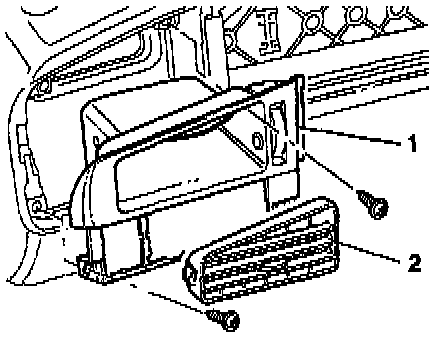

Air Register: Service and Repair
Replacing: If air guide (under instrument panel) already has seal installed, remove glued on seal from replacement part before installing.Left Vent, Removing:

- Remove headlight switch. Service and Repair
- Using long nose pliers, carefully pull out grille -2-.
- Remove screws and remove air outlet -1-.
Right Vent, Removing:

- Carefully lift and remove adjustable grilles -2- with long nose pliers.
- Remove screw -3- and disengage locating tabs -arrows-.
- Vent housing -1-, remove